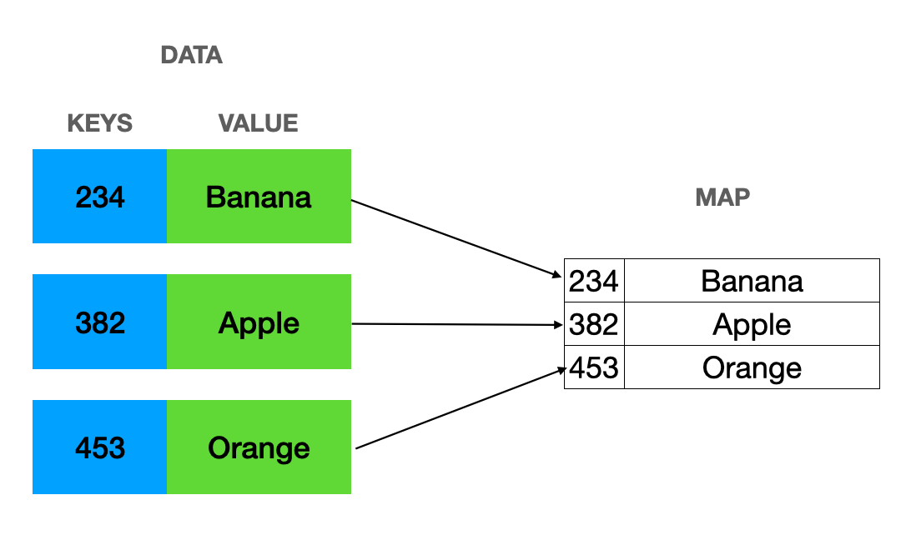

Map = A map is a container for elements that are stored as a combination of keys and corresponding values. Maps, as opposed to arrays or lists, use unique keys to identify and access their associated values. This enables fast data retrieval and modification without the need to know the specific index or position. Maps are associative containers that store elements in a mapped fashion. Each element has a key value and a mapped value. No two mapped values can have the same key values. std::map is the class template for map containers and it is defined inside the
